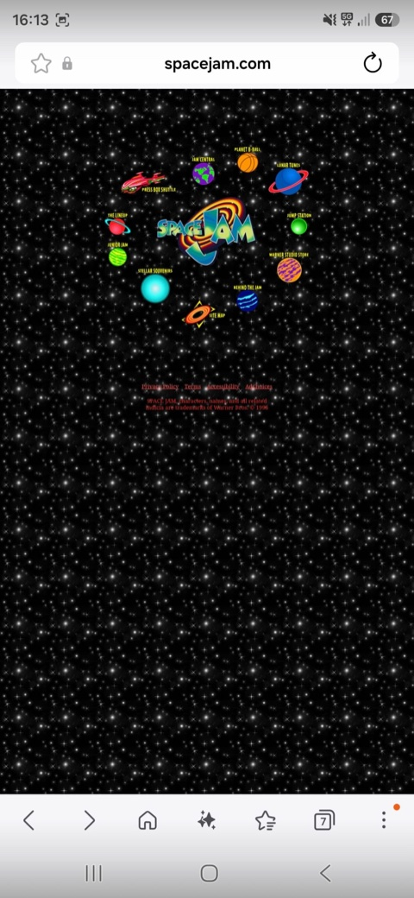
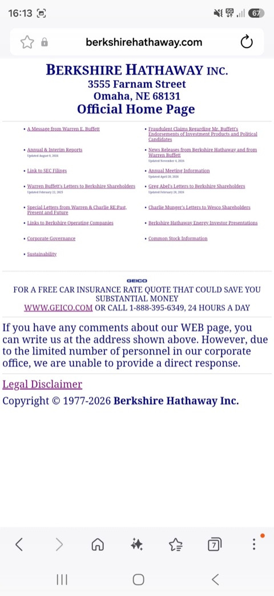

Why Does Mobile Layout Matter?
Today, people access websites using many different devices, including desktop computers, tablets and smartphones. However, a website designed for a large computer screen does not always work properly on a smaller screen.
When a layout does not adapt to the device, users may encounter tiny text, images that are too large, horizontal scrolling and navigation that is difficult to use. These problems can make even simple tasks frustrating.
Mobile layout is therefore an important part of user experience. A website should allow users to find information, read content and interact with elements comfortably, regardless of the device they are using.
What Causes Mobile Layout Failures?
One common cause is designing a website for a fixed screen width. A layout that looks organised on a desktop computer may become too wide for a smartphone. As a result, users may have to zoom in or scroll horizontally to see the complete content.
Another problem is poor organisation of elements. Navigation menus, images, columns and buttons may overlap or become difficult to reach when the screen gets smaller. Text can also become too small, making long paragraphs uncomfortable to read.
These issues often happen when designers focus only on how a website looks on one device instead of considering different screen sizes and ways of interacting with it.
1. Space Jam (1996)

The original Space Jam website is an example of an older website that was created for the web environment of the 1990s. Its layout was designed around the screen sizes and browsing habits of that period.
The problem
The website was not designed to adapt to modern smartphone screens. Its original layout can be difficult to navigate when viewed on a narrow display.
Why does it fail?
- Text and links can appear very small.
- Users may need to zoom in to read information.
- The layout does not make full use of the mobile screen.
- Navigation can be uncomfortable on a touchscreen.
How could it be improved?
A modern version could use a responsive layout, flexible images and readable typography. Navigation could also be simplified to make the website easier to use on smartphones.
2. Berkshire Hathaway

Berkshire Hathaway's website provides another example of a traditional web layout. Its simple presentation may work on a desktop screen, but the experience can be less comfortable when using a smartphone.
The problem
The traditional layout is not fully optimised for mobile browsing. Some elements can be difficult to read, locate or select on a small screen.
Why does it fail?
- Links may be too close together.
- Text and visual elements may not be well adapted.
- Navigation can require more effort from users.
- The overall experience is less comfortable on mobile.
How could it be improved?
The website could improve its spacing, typography and navigation. Important links should be easy to identify and select, while content should be organised in a way that fits smaller screens.
How Do Poor Layouts Affect Users?
A poorly adapted layout does more than create visual problems. It can directly affect how people interact with a website and whether they can complete their tasks.
- Reduced readability: Small text and poorly organised content make information harder to understand.
- Difficult navigation: Users may struggle to find menus, links and important information.
- More effort: Zooming and horizontal scrolling require additional actions.
- Accessibility barriers: A difficult layout can create additional challenges for users with visual or motor impairments.
- Frustration: Users may leave the website if they cannot easily find what they need.
What Is Responsive Design?
Responsive design is an approach to web design that allows a website to adapt its layout to different screen sizes and devices. Instead of creating a completely separate website for every device, designers use flexible layouts and elements that adjust to the available space. [3]
For example, a website may display several columns next to each other on a desktop computer. On a smartphone, these columns can be reorganised into a single vertical layout. Images can also resize to fit the screen, while navigation menus can become more compact.
The objective is to maintain a consistent and comfortable experience across devices. Users should not have to zoom in or scroll horizontally just to access ordinary content.
How Can Mobile Layouts Be Improved?
Good mobile design requires more than simply making everything smaller. Designers need to reorganise content and prioritise the elements that users need most.
- Use flexible layouts: Make elements adapt to the available screen width.
- Keep text readable: Use appropriate font sizes and comfortable spacing.
- Optimise images: Ensure images resize without overflowing the screen.
- Simplify navigation: Make menus and important links easy to find.
- Consider accessibility: Make content and interactive elements usable by people with different needs.
- Test different devices: Check that the website works on different screen sizes and orientations.
Accessibility guidelines also emphasise that content should remain usable when people change text size or view a page at different dimensions. A well-designed layout should support users rather than force them to adapt to the website. [4]
Key Takeaways
- Adapt to different screen sizes.
- Keep text readable.
- Make links easy to tap.
- Organise content clearly.
- Provide simple and accessible navigation.
- Offer a consistent experience across devices.
Conclusion
Mobile layout failures show how a website's design can affect the way people access and interact with information. Websites that are not adapted to smaller screens can become difficult to read, navigate and use.
Responsive design helps solve these problems by adapting layouts to different devices. By focusing on readability, accessibility and simple navigation, designers can create websites that provide a better experience for all users.